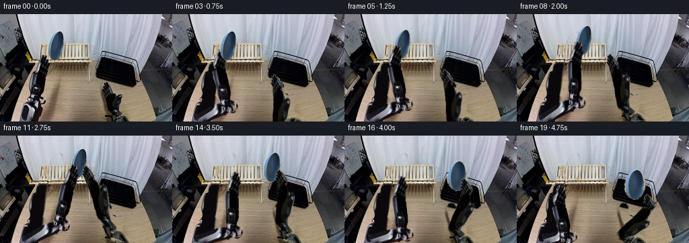
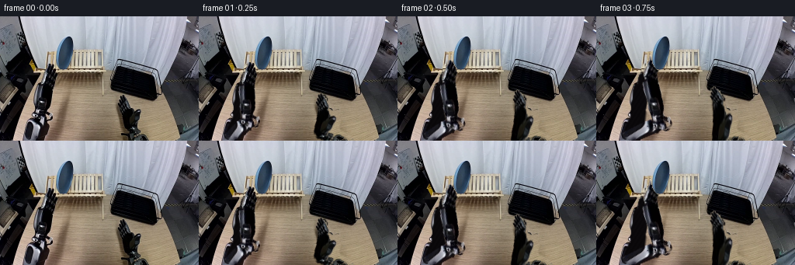
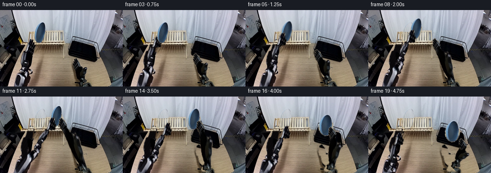
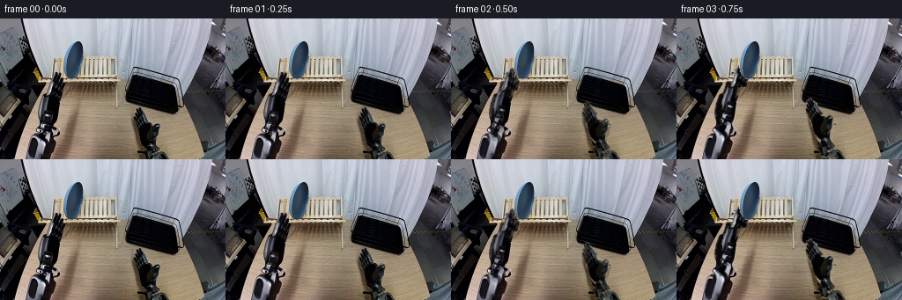
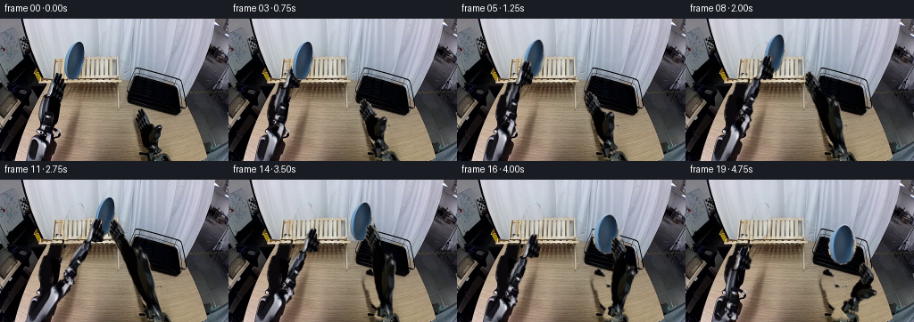

CODING AGENTS AS PIXEL WORLD MODELS
traex/GPT-6.1-Sol · common50_0035
点击播放 · 原生 RGB 像素
逐轮保存的候选
回放视频、检查图与代码变化。
每份候选均可单独播放。实际图片检查记录在下方工具轨迹中。
候选 01播放与检查图
点击播放 · 原生 RGB 像素


展开代码变化
--- 上一保存版本
+++ 本次保存版本
@@ -0,0 +1,210 @@
+"""A source-textured, articulated RGB continuation.
+
+The fixed workspace is retained. Each arm link is a rigid segment in an
+orthographic 3-D camera; its apparent length changes only by foreshortening.
+The plate is a rigid disk with an affine projection of its original texture.
+No image models or external renderers are used.
+"""
+from pathlib import Path
+import numpy as np
+from PIL import Image, ImageDraw, ImageFilter
+import artifact_io
+
+ROOT = Path(__file__).resolve().parent
+SRC = np.asarray(Image.open(ROOT/'first_frame.png').convert('RGB')).copy()
+H,W = SRC.shape[:2]
+Y,X = np.mgrid[:H,:W].astype(float)
+
+def poly(points):
+ a=Image.new('L',(W,H));ImageDraw.Draw(a).polygon(points,fill=255)
+ return np.asarray(a).astype(float)/255
+
+def feather(a,r=.55):
+ return np.asarray(Image.fromarray(np.uint8(a*255)).filter(ImageFilter.GaussianBlur(r))).astype(float)/255
+
+def sample(a,x,y):
+ x=np.clip(x,0,W-1.001);y=np.clip(y,0,H-1.001)
+ ix=x.astype(int);iy=y.astype(int);fx=x-ix;fy=y-iy
+ if a.ndim==3:fx=fx[...,None];fy=fy[...,None]
+ return (a[iy,ix]*(1-fx)*(1-fy)+a[iy,ix+1]*fx*(1-fy)+a[iy+1,ix]*(1-fx)*fy+a[iy+1,ix+1]*fx*fy)
+
+def over(img,col,alpha):
+ return img*(1-alpha[...,None])+col*alpha[...,None]
+
+PLATE=poly([(86,25),(90,25),(92,28),(94,33),(95,39),(95,47),(93,54),(90,61),(86,66),(83,68),(78,68),(75,65),(72,60),(71,54),(72,45),(75,37),(79,31),(83,27)])
+PLATE=feather(PLATE,.38)
+left_outline=[(31,159),(40,135),(44,130),(44,124),(45,117),(45,111),(47,106),(47,97),(48,90),(53,86),(54,80),(55,75),(58,73),(58,67),(60,61),(65,60),(69,62),(70,68),(71,74),(73,80),(70,87),(68,94),(67,104),(64,116),(63,121),(67,124),(69,130),(65,137),(58,140),(52,153),(48,159)]
+right_outline=[(151,111),(152,106),(155,101),(158,100),(162,101),(165,105),(166,111),(167,118),(172,121),(178,119),(182,120),(181,128),(182,135),(180,143),(183,147),(191,150),(197,155),(199,159),(166,159),(164,150),(160,144),(159,133),(156,125),(154,119),(153,115)]
+L0=np.array([[43.,157.,100.],[56.,128.,52.],[58.,83.,0.],[64.,68.,0.]])
+R0=np.array([[183.,163.,115.],[169.,139.,45.],[161.,118.,-10.],[158.,103.,-10.]])
+LM=poly(left_outline);RM=poly(right_outline)
+# Keep metallic highlights and black material, rather than the surrounding wood.
+r,g,b=SRC.astype(float).transpose(2,0,1)
+material=((r-g<11)|(r<54)|((b>r-3)&(g>r-7))).astype(float)
+LM=feather(LM*material,.40);RM=feather(RM*material,.40)
+
+# Background disocclusion: curtain samples above the stand, unobstructed
+# repetitions of the wooden stand underneath the plate, and table grain.
+BG=SRC.astype(float)
+curtain=sample(SRC.astype(float),X-29,Y)
+stand=sample(SRC.astype(float),X+25,Y)
+reveal=curtain.copy()
+blend=np.clip((Y-44.3)/2.0,0,1)
+reveal=reveal*(1-blend[...,None])+stand*blend[...,None]
+BG=over(BG,reveal,feather(PLATE,.75))
+# The left arm is inside the dark gap between the stand's supporting rails.
+# Preserve those rails and the room's static shadows.
+left_clean=SRC.astype(float).copy()
+noise=np.sin(X*1.12+Y*.7)*1.25
+left_clean[:]=np.stack([10+noise,8+noise,10+noise],axis=-1)
+# Left gap has light reflected from the wooden tabletop at its right boundary.
+edge=67.8-.105*(Y-80)
+wood=sample(SRC.astype(float),X+23,Y)
+woodmix=np.clip((X-edge+1)/3,0,1)
+left_clean=left_clean*(1-woodmix[...,None])+wood*woodmix[...,None]
+# Above the gap the wooden stand is visible.
+lupper=sample(SRC.astype(float),X+38,Y)
+topmix=np.clip((74-Y)/4,0,1)
+left_clean=left_clean*(1-topmix[...,None])+lupper*topmix[...,None]
+# Remove moving arm, but not its fixed lower mounting point.
+lerase=feather(poly(left_outline),.75)*(1-np.clip((Y-152)/7,0,1))
+BG=over(BG,left_clean,lerase)
+right_clean=sample(SRC.astype(float),X+32,Y)
+# The rack floor immediately behind the original right gripper is black.
+rackbottom=96.3+.233*(X-150)
+inside=(Y<rackbottom)&(X>149)&(X<208)
+right_clean[inside]=sample(SRC.astype(float),X+10,Y)[inside]*.40
+rerase=feather(poly(right_outline),.7)*(1-np.clip((Y-154)/6,0,1))
+BG=over(BG,right_clean,rerase)
+Image.fromarray(np.uint8(np.clip(BG,0,255))).save(ROOT/'background.png')
+
+# Masks partition the original arm into rigid links, wrist, and joints.
+def bone_mask(outline,a,b,lo=0.,hi=1.):
+ u=b[:2]-a[:2];t=((X-a[0])*u[0]+(Y-a[1])*u[1])/np.dot(u,u)
+ return outline*np.clip((t-lo)*8,0,1)*np.clip((hi-t)*8,0,1)
+
+def warp(img,mask,sa,sb,da,db,width_scale=1.):
+ su=sb[:2]-sa[:2];du=db[:2]-da[:2]
+ sl=np.linalg.norm(su);dl=np.linalg.norm(du)
+ if dl<2:return img
+ se=su/sl;sn=np.array([-se[1],se[0]])
+ de=du/dl;dn=np.array([-de[1],de[0]])
+ ax=(X-da[0])*de[0]+(Y-da[1])*de[1]
+ ay=((X-da[0])*dn[0]+(Y-da[1])*dn[1])/width_scale
+ sx=sa[0]+ax*(sl/dl)*se[0]+ay*sn[0]
+ sy=sa[1]+ax*(sl/dl)*se[1]+ay*sn[1]
+ alpha=sample(mask,sx,sy)
+ valid=(sx>=0)&(sx<W-1)&(sy>=0)&(sy<H-1)
+ alpha*=valid
+ col=sample(SRC.astype(float),sx,sy)
+ return over(img,col,alpha)
+
+def joint(img,mask,source,dest,radius):
+ disk=np.clip(radius+.65-np.sqrt((X-source[0])**2+(Y-source[1])**2),0,1)*mask
+ return warp(img,disk,source,source+np.array([0.,-10.,0.]),dest,dest+np.array([0.,-10.,0.]))
+
+ARM=[]
+for init,mask in [(L0,LM),(R0,RM)]:
+ masks=[bone_mask(mask,init[i],init[i+1],-.15,1.15) for i in range(3)]
+ # Restrict hand to the compact original wrist and two fingers.
+ v=init[3,:2]-init[2,:2]; t=((X-init[2,0])*v[0]+(Y-init[2,1])*v[1])/np.dot(v,v)
+ masks[2]=mask*np.clip((t+.13)*6,0,1)
+ ARM.append((init,mask,masks))
+
+def arm(img,index,pose):
+ ini,mask,masks=ARM[index]
+ # Upper arm first; forearm sits in front of its elbow.
+ for j in range(2):
+ img=warp(img,masks[j],ini[j],ini[j+1],pose[j],pose[j+1])
+ if j==0:img=joint(img,mask,ini[1],pose[1],8 if index==0 else 7)
+ img=joint(img,mask,ini[2],pose[2],5.2)
+ img=warp(img,masks[2],ini[2],ini[3],pose[2],pose[3])
+ return img
+
+# Smooth contact trajectories. A held plate moves with the holding tool.
+def smooth(t):return np.clip(t,0,1)**2*(3-2*np.clip(t,0,1))
+def track(keys,f):
+ if f<=keys[0][0]:return np.array(keys[0][1],float)
+ for (i,a),(j,b) in zip(keys[:-1],keys[1:]):
+ if f<=j:return np.array(a,float)*(1-smooth((f-i)/(j-i)))+np.array(b,float)*smooth((f-i)/(j-i))
+ return np.array(keys[-1][1],float)
+
+platekeys=[(0,[83.,47.,65.]),(4,[83.,47.,65.]),(7,[93.,38.,72.]),(10,[117.,41.,72.]),(12,[117.,41.,72.]),(15,[159.,49.,59.]),(17,[175.,71.,51.]),(19,[175.,73.,51.])]
+leftkeys=[(0,[64.,68.,0.]),(1,[66.,66.,10.]),(4,[74.,56.,65.]),(7,[84.,47.,72.]),(10,[108.,50.,72.]),(12,[108.,50.,72.]),(15,[88.,65.,55.]),(19,[65.,81.,20.])]
+rightkeys=[(0,[158.,103.,-10.]),(4,[150.,91.,30.]),(7,[142.,67.,55.]),(10,[127.,47.,72.]),(12,[127.,47.,72.]),(15,[169.,55.,59.]),(17,[185.,77.,51.]),(18,[185.,79.,51.]),(19,[193.,90.,35.])]
+
+def ik(index,tip,f):
+ ini,_,_=ARM[index];B=ini[0].copy()
+ # The hand has a fixed length; its rotation is a rigid wrist rotation.
+ v0=ini[3]-ini[2];tl=np.linalg.norm(v0)
+ v=v0/tl
+ target=np.array([.41,-.912,0.]) if index==0 else np.array([-.37,-.929,0.])
+ target/=np.linalg.norm(target)
+ amount=smooth(f/4)
+ d=v*(1-amount)+target*amount;d/=np.linalg.norm(d)
+ wrist=tip-d*tl
+ l1=np.linalg.norm(ini[1]-ini[0]);l2=np.linalg.norm(ini[2]-ini[1])
+ vec=wrist-B;D=np.linalg.norm(vec);n=vec/D
+ # All contact keyframes lie inside the arms' fixed-link reach.
+ if D>l1+l2-.001:
+ wrist=B+vec*(l1+l2-.001)/D;D=np.linalg.norm(wrist-B);n=(wrist-B)/D
+ tip=wrist+d*tl
+ a=(l1*l1-l2*l2+D*D)/(2*D);h=np.sqrt(max(0,l1*l1-a*a))
+ center=B+a*n
+ pref=ini[1]+(wrist-ini[2])*.47
+ # Project the preferred elbow onto the exact IK solution circle.
+ bend=pref-center;bend-=n*np.dot(bend,n)
+ if np.linalg.norm(bend)<1e-5:bend=np.array([1.,0.,0.]);bend-=n*np.dot(bend,n)
+ E=center+h*bend/np.linalg.norm(bend)
+ return np.array([B,E,wrist,tip])
+
+# Disk projection: local horizontal and vertical axes remain orthogonal
+# in the disk's own plane. The minor axis changes with face orientation.
+P0=np.array([83.,47.]);old_u=np.array([.9842,.177]);old_v=np.array([.177,-.9842])
+def plate(img,center,f):
+ turn=smooth((f-12)/5)
+ angle=.178*(1-turn)+.02*turn
+ u=np.array([np.cos(angle),np.sin(angle)]);v=np.array([np.sin(angle),-np.cos(angle)])
+ minor=1+.31*turn
+ # Final disk remains upright, seated in a slot rather than laid flat.
+ ax=((X-center[0])*u[0]+(Y-center[1])*u[1])/minor
+ ay=(X-center[0])*v[0]+(Y-center[1])*v[1]
+ sx=P0[0]+ax*old_u[0]+ay*old_v[0]
+ sy=P0[1]+ax*old_u[1]+ay*old_v[1]
+ alpha=sample(PLATE,sx,sy)
+ col=sample(SRC.astype(float),sx,sy)
+ # Restrained illumination variation as the blue enamel turns.
+ col*=1+.035*turn
+ return over(img,col,alpha)
+
+frames=[SRC.copy()]
+poses=[]
+for f in range(1,20):
+ img=BG.copy()
+ pc=track(platekeys,f);lt=track(leftkeys,f);rt=track(rightkeys,f)
+ lp=ik(0,lt,f);rp=ik(1,rt,f)
+ poses.append((lp.tolist(),rp.tolist(),pc.tolist()))
+ # Soft contact shadow on the rack floor during placement.
+ if f>=14:
+ sh=.12*smooth((f-14)/3)*np.exp(-(((X-pc[0])/15)**2+((Y-(pc[1]+21))/3)**2))
+ img*=1-sh[...,None]
+ img=arm(img,0,lp);img=arm(img,1,rp)
+ img=plate(img,pc,f)
+ # Fingers overlap only the contacted rim, never the plate's full face.
+ if 4<=f<=12:
+ ini,mask,ms=ARM[0];img=warp(img,ms[2],ini[2],ini[3],lp[2],lp[3])
+ if 10<=f<=18:
+ ini,mask,ms=ARM[1];img=warp(img,ms[2],ini[2],ini[3],rp[2],rp[3])
+ # The existing drying-rack rail is in front of the plate's seated base.
+ if f>=16:
+ rail=poly([(155,95),(203,105),(203,108),(155,98)])
+ # Limit occlusion to the original rail pixels, not the entire floor.
+ nearplate=np.exp(-((X-pc[0])/24)**8)
+ img=over(img,SRC.astype(float),rail*nearplate*smooth((f-16)/2))
+ img=np.uint8(np.clip(np.round(img),0,255))
+ frames.append(img)
+frames=np.stack(frames)
+assert frames.shape==(20,160,256,3) and np.array_equal(frames[0],SRC)
+artifact_io.save(frames,ROOT)
+np.save(ROOT/'poses.npy',np.array(poses,dtype=object),allow_pickle=True)
+print('Saved',frames.shape,'RGB frames; first frame unchanged.')
候选 02播放与检查图
点击播放 · 原生 RGB 像素


展开代码变化
--- 上一保存版本
+++ 本次保存版本
@@ -35,13 +35,19 @@
PLATE=feather(PLATE,.38)
left_outline=[(31,159),(40,135),(44,130),(44,124),(45,117),(45,111),(47,106),(47,97),(48,90),(53,86),(54,80),(55,75),(58,73),(58,67),(60,61),(65,60),(69,62),(70,68),(71,74),(73,80),(70,87),(68,94),(67,104),(64,116),(63,121),(67,124),(69,130),(65,137),(58,140),(52,153),(48,159)]
right_outline=[(151,111),(152,106),(155,101),(158,100),(162,101),(165,105),(166,111),(167,118),(172,121),(178,119),(182,120),(181,128),(182,135),(180,143),(183,147),(191,150),(197,155),(199,159),(166,159),(164,150),(160,144),(159,133),(156,125),(154,119),(153,115)]
-L0=np.array([[43.,157.,100.],[56.,128.,52.],[58.,83.,0.],[64.,68.,0.]])
-R0=np.array([[183.,163.,115.],[169.,139.,45.],[161.,118.,-10.],[158.,103.,-10.]])
-LM=poly(left_outline);RM=poly(right_outline)
-# Keep metallic highlights and black material, rather than the surrounding wood.
+L0=np.array([[43.,157.,100.],[54.,128.,30.],[51.,91.,55.],[64.,68.,55.]])
+R0=np.array([[183.,163.,115.],[169.,139.,140.],[161.,118.,45.],[158.,103.,45.]])
+Lpolys=[[(31,159),(40,137),(45,130),(51,128),(57,131),(59,137),(53,145),(49,158)],
+ [(45,128),(46,119),(45,111),(44,106),(45,96),(48,89),(52,86),(56,89),(57,103),(55,116),(58,123),(57,131),(50,133)],
+ [(48,91),(48,86),(51,79),(55,73),(57,68),(61,64),(66,60),(69,62),(69,73),(72,77),(73,81),(69,87),(62,88),(57,86),(54,92)]]
+Rpolys=[[(165,159),(163,152),(166,147),(168,142),(175,141),(180,143),(182,149),(191,151),(197,156),(199,159)],
+ [(165,143),(160,138),(158,132),(157,125),(154,121),(155,115),(161,112),(165,115),(167,120),(171,121),(178,119),(181,121),(180,131),(179,139),(177,144),(171,146)],
+ [(154,123),(152,116),(152,109),(153,105),(155,101),(158,100),(161,101),(164,104),(166,108),(167,115),(166,120),(162,124)]]
r,g,b=SRC.astype(float).transpose(2,0,1)
material=((r-g<11)|(r<54)|((b>r-3)&(g>r-7))).astype(float)
-LM=feather(LM*material,.40);RM=feather(RM*material,.40)
+Lparts=[feather(poly(p)*material,.35) for p in Lpolys]
+Rparts=[feather(poly(p)*material,.35) for p in Rpolys]
+LM=np.maximum.reduce(Lparts);RM=np.maximum.reduce(Rparts)
# Background disocclusion: curtain samples above the stand, unobstructed
# repetitions of the wooden stand underneath the plate, and table grain.
@@ -67,14 +73,14 @@
topmix=np.clip((74-Y)/4,0,1)
left_clean=left_clean*(1-topmix[...,None])+lupper*topmix[...,None]
# Remove moving arm, but not its fixed lower mounting point.
-lerase=feather(poly(left_outline),.75)*(1-np.clip((Y-152)/7,0,1))
+lerase=feather(LM,.65)*(1-np.clip((Y-152)/7,0,1))
BG=over(BG,left_clean,lerase)
right_clean=sample(SRC.astype(float),X+32,Y)
# The rack floor immediately behind the original right gripper is black.
rackbottom=96.3+.233*(X-150)
inside=(Y<rackbottom)&(X>149)&(X<208)
right_clean[inside]=sample(SRC.astype(float),X+10,Y)[inside]*.40
-rerase=feather(poly(right_outline),.7)*(1-np.clip((Y-154)/6,0,1))
+rerase=feather(RM,.65)*(1-np.clip((Y-154)/6,0,1))
BG=over(BG,right_clean,rerase)
Image.fromarray(np.uint8(np.clip(BG,0,255))).save(ROOT/'background.png')
@@ -103,13 +109,7 @@
disk=np.clip(radius+.65-np.sqrt((X-source[0])**2+(Y-source[1])**2),0,1)*mask
return warp(img,disk,source,source+np.array([0.,-10.,0.]),dest,dest+np.array([0.,-10.,0.]))
-ARM=[]
-for init,mask in [(L0,LM),(R0,RM)]:
- masks=[bone_mask(mask,init[i],init[i+1],-.15,1.15) for i in range(3)]
- # Restrict hand to the compact original wrist and two fingers.
- v=init[3,:2]-init[2,:2]; t=((X-init[2,0])*v[0]+(Y-init[2,1])*v[1])/np.dot(v,v)
- masks[2]=mask*np.clip((t+.13)*6,0,1)
- ARM.append((init,mask,masks))
+ARM=[(L0,LM,Lparts),(R0,RM,Rparts)]
def arm(img,index,pose):
ini,mask,masks=ARM[index]
@@ -130,15 +130,15 @@
return np.array(keys[-1][1],float)
platekeys=[(0,[83.,47.,65.]),(4,[83.,47.,65.]),(7,[93.,38.,72.]),(10,[117.,41.,72.]),(12,[117.,41.,72.]),(15,[159.,49.,59.]),(17,[175.,71.,51.]),(19,[175.,73.,51.])]
-leftkeys=[(0,[64.,68.,0.]),(1,[66.,66.,10.]),(4,[74.,56.,65.]),(7,[84.,47.,72.]),(10,[108.,50.,72.]),(12,[108.,50.,72.]),(15,[88.,65.,55.]),(19,[65.,81.,20.])]
-rightkeys=[(0,[158.,103.,-10.]),(4,[150.,91.,30.]),(7,[142.,67.,55.]),(10,[127.,47.,72.]),(12,[127.,47.,72.]),(15,[169.,55.,59.]),(17,[185.,77.,51.]),(18,[185.,79.,51.]),(19,[193.,90.,35.])]
+leftkeys=[(0,[64.,68.,55.]),(4,[74.,56.,65.]),(7,[84.,47.,72.]),(10,[108.,50.,72.]),(12,[108.,50.,72.]),(15,[88.,65.,55.]),(19,[65.,81.,20.])]
+rightkeys=[(0,[158.,103.,45.]),(4,[150.,91.,30.]),(7,[142.,67.,55.]),(10,[127.,47.,72.]),(12,[127.,47.,72.]),(15,[169.,55.,59.]),(17,[185.,77.,51.]),(18,[185.,79.,51.]),(19,[193.,90.,35.])]
def ik(index,tip,f):
ini,_,_=ARM[index];B=ini[0].copy()
# The hand has a fixed length; its rotation is a rigid wrist rotation.
v0=ini[3]-ini[2];tl=np.linalg.norm(v0)
v=v0/tl
- target=np.array([.41,-.912,0.]) if index==0 else np.array([-.37,-.929,0.])
+ target=np.array([.46,-.888,0.]) if index==0 else np.array([-.37,-.929,0.])
target/=np.linalg.norm(target)
amount=smooth(f/4)
d=v*(1-amount)+target*amount;d/=np.linalg.norm(d)
@@ -201,6 +201,8 @@
# Limit occlusion to the original rail pixels, not the entire floor.
nearplate=np.exp(-((X-pc[0])/24)**8)
img=over(img,SRC.astype(float),rail*nearplate*smooth((f-16)/2))
+ if f<3:
+ img=SRC.astype(float)*(1-smooth(f/3))+img*smooth(f/3)
img=np.uint8(np.clip(np.round(img),0,255))
frames.append(img)
frames=np.stack(frames)
候选 03播放与检查图
点击播放 · 原生 RGB 像素

展开代码变化
--- 上一保存版本
+++ 本次保存版本
@@ -129,9 +129,9 @@
if f<=j:return np.array(a,float)*(1-smooth((f-i)/(j-i)))+np.array(b,float)*smooth((f-i)/(j-i))
return np.array(keys[-1][1],float)
-platekeys=[(0,[83.,47.,65.]),(4,[83.,47.,65.]),(7,[93.,38.,72.]),(10,[117.,41.,72.]),(12,[117.,41.,72.]),(15,[159.,49.,59.]),(17,[175.,71.,51.]),(19,[175.,73.,51.])]
+platekeys=[(0,[83.,47.,65.]),(4,[83.,47.,65.]),(7,[93.,38.,72.]),(10,[117.,41.,72.]),(12,[117.,41.,72.]),(15,[159.,49.,59.]),(17,[175.,73.,51.]),(19,[175.,73.,51.])]
leftkeys=[(0,[64.,68.,55.]),(4,[74.,56.,65.]),(7,[84.,47.,72.]),(10,[108.,50.,72.]),(12,[108.,50.,72.]),(15,[88.,65.,55.]),(19,[65.,81.,20.])]
-rightkeys=[(0,[158.,103.,45.]),(4,[150.,91.,30.]),(7,[142.,67.,55.]),(10,[127.,47.,72.]),(12,[127.,47.,72.]),(15,[169.,55.,59.]),(17,[185.,77.,51.]),(18,[185.,79.,51.]),(19,[193.,90.,35.])]
+rightkeys=[(0,[158.,103.,45.]),(4,[150.,91.,30.]),(7,[142.,67.,55.]),(10,[127.,47.,72.]),(12,[127.,47.,72.]),(15,[169.,55.,59.]),(17,[185.,79.,51.]),(18,[192.,86.,45.]),(19,[199.,96.,35.])]
def ik(index,tip,f):
ini,_,_=ARM[index];B=ini[0].copy()
@@ -193,7 +193,7 @@
# Fingers overlap only the contacted rim, never the plate's full face.
if 4<=f<=12:
ini,mask,ms=ARM[0];img=warp(img,ms[2],ini[2],ini[3],lp[2],lp[3])
- if 10<=f<=18:
+ if 10<=f<=17:
ini,mask,ms=ARM[1];img=warp(img,ms[2],ini[2],ini[3],rp[2],rp[3])
# The existing drying-rack rail is in front of the plate's seated base.
if f>=16:
@@ -201,8 +201,6 @@
# Limit occlusion to the original rail pixels, not the entire floor.
nearplate=np.exp(-((X-pc[0])/24)**8)
img=over(img,SRC.astype(float),rail*nearplate*smooth((f-16)/2))
- if f<3:
- img=SRC.astype(float)*(1-smooth(f/3))+img*smooth(f/3)
img=np.uint8(np.clip(np.round(img),0,255))
frames.append(img)
frames=np.stack(frames)
可观测工具轨迹
实际执行的命令与返回图片。
命令 1exit 0
/bin/bash -lc "ls -la && cat prompt.txt && printf '\\n--- RULES ---\\n' && cat GENERATION_RULES.md"
命令 2exit 0
/bin/bash -lc "cat task_spec.json && cat artifact_io.py && python - <<'PY'
from PIL import Image
import numpy as np
im=np.array(Image.open('first_frame.png'))
print('shape',im.shape)
# print luminance ascii 128x40
im=Image.open('first_frame.png').resize((128,40))
a=np.asarray(im); gray=a.mean(2)
c=' .:-=+*#%@'
for row in gray:
print(''.join(c[min(9,int(v/256*10))] for v in row))
PY"命令 3exit 0
/bin/bash -lc "python - <<'PY'
from PIL import Image
import numpy as np
im=np.array(Image.open('first_frame.png')).astype(float)
# named color classify
r,g,b=im.transpose(2,0,1)
blue=(b>r*1.22)&(b>g*1.06)&(b>45)
for name,m in [('blue',blue),('white',(np.min(im,2)>170)&(np.max(im,2)-np.min(im,2)<35)),('dark',im.max(2)<65),('warm',(r>g*1.12)&(r>b*1.3)&(r>60))]:
ys,xs=np.where(m);print(name,len(xs),'bounds', (xs.min(),ys.min(),xs.max(),ys.max()) if len(xs) else None)
print('row hist',np.histogram(ys,bins=16,range=(0,160))[0]);print('col hist',np.histogram(xs,bins=16,range=(0,256))[0])
# full color coding downsample 2x2
im=np.array(Image.open('first_frame.png').resize((128,80))).astype(float)
for y,row in enumerate(im):
s=''
for r,g,b in row:
v=(r+g+b)/3
if b>r*1.22 and b>g*1.06 and b>45:c='B'
elif r>b*1.25 and r>g*1.08 and r>60:c='w' if v<150 else 'W'
elif max(r,g,b)<45:c='@'
elif v<75:c='#'
elif v<110:c='+'
elif v<150:c='-'
elif v<185:c='.'
elif v<220:c='o'
else:c=' '
s+=c
print(f'{y*2:03} {s}')
PY"命令 4exit 0
/bin/bash -lc "python - <<'PY'
from PIL import Image
import numpy as np
from scipy.ndimage import label
im=np.asarray(Image.open('first_frame.png'));r,g,b=im.transpose(2,0,1).astype(float)
m=(b>r*1.22)&(b>g*1.06)&(b>45)
l,n=label(m)
for i in sorted(range(1,n+1),key=lambda i:(l==i).sum(),reverse=True)[:8]:
y,x=np.where(l==i); print('blue comp',len(x),[x.min(),y.min(),x.max(),y.max()],im[l==i].mean(0))
for box in [(38,108,79,160),(142,94,188,154),(64,23,97,73),(143,53,213,112)]:
x0,y0,x1,y1=box
print('BOX',box)
for y in range(y0,y1):
s=''
for r,g,b in im[y,x0:x1].astype(float):
v=(r+g+b)/3
if b>r*1.22 and b>g*1.06 and b>45:c='B'
elif r>b*1.25 and r>g*1.08 and r>60:c='w' if v<150 else 'W'
elif max(r,g,b)<45:c='@'
elif v<75:c='#'
elif v<110:c='+'
elif v<150:c='-'
elif v<185:c='.'
elif v<220:c='o'
else:c=' '
s+=c
print(f'{y:03} {s}')
PY"命令 5exit 0
/bin/bash -lc "python - <<'PY'
import numpy as np
from PIL import Image
im=np.array(Image.open('first_frame.png'))
for y in [60,65,70,75,80,90,100,110,120,130,140,150,159]:
print('\\ny',y)
for x in range(0,100,2):
r,g,b=im[y,x]; print(f'{x}:{r},{g},{b}',end=' ')
print()
print('\\nright')
for y in [100,110,120,130,140,150,159]:
print('\\ny',y)
for x in range(148,198,2):
r,g,b=im[y,x];print(f'{x}:{r},{g},{b}',end=' ')
print()
PY"命令 6exit 0
/bin/bash -lc "python - <<'PY'
import numpy as np
from PIL import Image
im=np.array(Image.open('first_frame.png'))
for y in range(25,69):
coords=[]
for x in range(70,96):
r,g,b=im[y,x].astype(float)
if b>r*1.22 and b>g*1.06 and b>45:coords.append(x)
if coords: print(y,min(coords),max(coords))
print('coarse RGB upper left robot / stand')
for y in range(44,140,4):
print(y,' '.join(f'{x}:({im[y,x,0]},{im[y,x,1]},{im[y,x,2]})' for x in range(48,75,3)))
PY"命令 7exit 0
/bin/bash -lc "python - <<'PY'
import numpy as np
from PIL import Image
im=np.array(Image.open('first_frame.png'));r,g,b=im.astype(float).transpose(2,0,1); y,x=np.where((b>r*1.22)&(b>g*1.06)&(b>45)&(np.indices((160,256))[1]>70)&(np.indices((160,256))[1]<96)&(np.indices((160,256))[0]<70))
p=np.array([x,y]).T
print(p.mean(0), np.linalg.eigh(np.cov(p.T)))
PY"命令 8exit 0
/bin/bash -lc "cat > generate.py <<'PY'
\"\"\"A source-textured, articulated RGB continuation.
The fixed workspace is retained. Each arm link is a rigid segment in an
orthographic 3-D camera; its apparent length changes only by foreshortening.
The plate is a rigid disk with an affine projection of its original texture.
No image models or external renderers are used.
\"\"\"
from pathlib import Path
import numpy as np
from PIL import Image, ImageDraw, ImageFilter
import artifact_io
ROOT = Path(__file__).resolve().parent
SRC = np.asarray(Image.open(ROOT/'first_frame.png').convert('RGB')).copy()
H,W = SRC.shape[:2]
Y,X = np.mgrid[:H,:W].astype(float)
def poly(points):
a=Image.new('L',(W,H));ImageDraw.Draw(a).polygon(points,fill=255)
return np.asarray(a).astype(float)/255
def feather(a,r=.55):
return np.asarray(Image.fromarray(np.uint8(a*255)).filter(ImageFilter.GaussianBlur(r))).astype(float)/255
def sample(a,x,y):
x=np.clip(x,0,W-1.001);y=np.clip(y,0,H-1.001)
ix=x.astype(int);iy=y.astype(int);fx=x-ix;fy=y-iy
if a.ndim==3:fx=fx[...,None];fy=fy[...,None]
return (a[iy,ix]*(1-fx)*(1-fy)+a[iy,ix+1]*fx*(1-fy)+a[iy+1,ix]*(1-fx)*fy+a[iy+1,ix+1]*fx*fy)
def over(img,col,alpha):
return img*(1-alpha[...,None])+col*alpha[...,None]
PLATE=poly([(86,25),(90,25),(92,28),(94,33),(95,39),(95,47),(93,54),(90,61),(86,66),(83,68),(78,68),(75,65),(72,60),(71,54),(72,45),(75,37),(79,31),(83,27)])
PLATE=feather(PLATE,.38)
left_outline=[(31,159),(40,135),(44,130),(44,124),(45,117),(45,111),(47,106),(47,97),(48,90),(53,86),(54,80),(55,75),(58,73),(58,67),(60,61),(65,60),(69,62),(70,68),(71,74),(73,80),(70,87),(68,94),(67,104),(64,116),(63,121),(67,124),(69,130),(65,137),(58,140),(52,153),(48,159)]
right_outline=[(151,111),(152,106),(155,101),(158,100),(162,101),(165,105),(166,111),(167,118),(172,121),(178,119),(182,120),(181,128),(182,135),(180,143),(183,147),(191,150),(197,155),(199,159),(166,159),(164,150),(160,144),(159,133),(156,125),(154,119),(153,115)]
L0=np.array([[43.,157.,100.],[56.,128.,52.],[58.,83.,0.],[64.,68.,0.]])
R0=np.array([[183.,163.,115.],[169.,139.,45.],[161.,118.,-10.],[158.,103.,-10.]])
LM=poly(left_outline);RM=poly(right_outline)
# Keep metallic highlights and black material, rather than the surrounding wood.
r,g,b=SRC.astype(float).transpose(2,0,1)
material=((r-g<11)|(r<54)|((b>r-3)&(g>r-7))).astype(float)
LM=feather(LM*material,.40);RM=feather(RM*material,.40)
# Background disocclusion: curtain samples above the stand, unobstructed
# repetitions of the wooden stand underneath the plate, and table grain.
BG=SRC.astype(float)
curtain=sample(SRC.astype(float),X-29,Y)
stand=sample(SRC.astype(float),X+25,Y)
reveal=curtain.copy()
blend=np.clip((Y-44.3)/2.0,0,1)
reveal=reveal*(1-blend[...,None])+stand*blend[...,None]
BG=over(BG,reveal,feather(PLATE,.75))
# The left arm is inside the dark gap between the stand's supporting rails.
# Preserve those rails and the room's static shadows.
left_clean=SRC.astype(float).copy()
noise=np.sin(X*1.12+Y*.7)*1.25
left_clean[:]=np.stack([10+noise,8+noise,10+noise],axis=-1)
# Left gap has light reflected from the wooden tabletop at its right boundary.
edge=67.8-.105*(Y-80)
wood=sample(SRC.astype(float),X+23,Y)
woodmix=np.clip((X-edge+1)/3,0,1)
left_clean=left_clean*(1-woodmix[...,None])+wood*woodmix[...,None]
# Above the gap the wooden stand is visible.
lupper=sample(SRC.astype(float),X+38,Y)
topmix=np.clip((74-Y)/4,0,1)
left_clean=left_clean*(1-topmix[...,None])+lupper*topmix[...,None]
# Remove moving arm, but not its fixed lower mounting point.
lerase=feather(poly(left_outline),.75)*(1-np.clip((Y-152)/7,0,1))
BG=over(BG,left_clean,lerase)
right_clean=sample(SRC.astype(float),X+32,Y)
# The rack floor immediately behind the original right gripper is black.
rackbottom=96.3+.233*(X-150)
inside=(Y<rackbottom)&(X>149)&(X<208)
right_clean[inside]=sample(SRC.astype(float),X+10,Y)[inside]*.40
rerase=feather(poly(right_outline),.7)*(1-np.clip((Y-154)/6,0,1))
BG=over(BG,right_clean,rerase)
Image.fromarray(np.uint8(np.clip(BG,0,255))).save(ROOT/'background.png')
# Masks partition the original arm into rigid links, wrist, and joints.
def bone_mask(outline,a,b,lo=0.,hi=1.):
u=b[:2]-a[:2];t=((X-a[0])*u[0]+(Y-a[1])*u[1])/np.dot(u,u)
return outline*np.clip((t-lo)*8,0,1)*np.clip((hi-t)*8,0,1)
def warp(img,mask,sa,sb,da,db,width_scale=1.):
su=sb[:2]-sa[:2];du=db[:2]-da[:2]
sl=np.linalg.norm(su);dl=np.linalg.norm(du)
if dl<2:return img
se=su/sl;sn=np.array([-se[1],se[0]])
de=du/dl;dn=np.array([-de[1],de[0]])
ax=(X-da[0])*de[0]+(Y-da[1])*de[1]
ay=((X-da[0])*dn[0]+(Y-da[1])*dn[1])/width_scale
sx=sa[0]+ax*(sl/dl)*se[0]+ay*sn[0]
sy=sa[1]+ax*(sl/dl)*se[1]+ay*sn[1]
alpha=sample(mask,sx,sy)
valid=(sx>=0)&(sx<W-1)&(sy>=0)&(sy<H-1)
alpha*=valid
col=sample(SRC.astype(float),sx,sy)
return over(img,col,alpha)
def joint(img,mask,source,dest,radius):
disk=np.clip(radius+.65-np.sqrt((X-source[0])**2+(Y-source[1])**2),0,1)*mask
return warp(img,disk,source,source+np.array([0.,-10.,0.]),dest,dest+np.array([0.,-10.,0.]))
ARM=[]
for init,mask in [(L0,LM),(R0,RM)]:
masks=[bone_mask(mask,init[i],init[i+1],-.15,1.15) for i in range(3)]
# Restrict hand to the compact original wrist and two fingers.
v=init[3,:2]-init[2,:2]; t=((X-init[2,0])*v[0]+(Y-init[2,1])*v[1])/np.dot(v,v)
masks[2]=mask*np.clip((t+.13)*6,0,1)
ARM.append((init,mask,masks))
def arm(img,index,pose):
ini,mask,masks=ARM[index]
# Upper arm first; forearm sits in front of its elbow.
for j in range(2):
img=warp(img,masks[j],ini[j],ini[j+1],pose[j],pose[j+1])
if j==0:img=joint(img,mask,ini[1],pose[1],8 if index==0 else 7)
img=joint(img,mask,ini[2],pose[2],5.2)
img=warp(img,masks[2],ini[2],ini[3],pose[2],pose[3])
return img
# Smooth contact trajectories. A held plate moves with the holding tool.
def smooth(t):return np.clip(t,0,1)**2*(3-2*np.clip(t,0,1))
def track(keys,f):
if f<=keys[0][0]:return np.array(keys[0][1],float)
for (i,a),(j,b) in zip(keys[:-1],keys[1:]):
if f<=j:return np.array(a,float)*(1-smooth((f-i)/(j-i)))+np.array(b,float)*smooth((f-i)/(j-i))
return np.array(keys[-1][1],float)
platekeys=[(0,[83.,47.,65.]),(4,[83.,47.,65.]),(7,[93.,38.,72.]),(10,[117.,41.,72.]),(12,[117.,41.,72.]),(15,[159.,49.,59.]),(17,[175.,71.,51.]),(19,[175.,73.,51.])]
leftkeys=[(0,[64.,68.,0.]),(1,[66.,66.,10.]),(4,[74.,56.,65.]),(7,[84.,47.,72.]),(10,[108.,50.,72.]),(12,[108.,50.,72.]),(15,[88.,65.,55.]),(19,[65.,81.,20.])]
rightkeys=[(0,[158.,103.,-10.]),(4,[150.,91.,30.]),(7,[142.,67.,55.]),(10,[127.,47.,72.]),(12,[127.,47.,72.]),(15,[169.,55.,59.]),(17,[185.,77.,51.]),(18,[185.,79.,51.]),(19,[193.,90.,35.])]
def ik(index,tip,f):
ini,_,_=ARM[index];B=ini[0].copy()
# The hand has a fixed length; its rotation is a rigid wrist rotation.
v0=ini[3]-ini[2];tl=np.linalg.norm(v0)
v=v0/tl
target=np.array([.41,-.912,0.]) if index==0 else np.array([-.37,-.929,0.])
target/=np.linalg.norm(target)
amount=smooth(f/4)
d=v*(1-amount)+target*amount;d/=np.linalg.norm(d)
wrist=tip-d*tl
l1=np.linalg.norm(ini[1]-ini[0]);l2=np.linalg.norm(ini[2]-ini[1])
vec=wrist-B;D=np.linalg.norm(vec);n=vec/D
# All contact keyframes lie inside the arms' fixed-link reach.
if D>l1+l2-.001:
wrist=B+vec*(l1+l2-.001)/D;D=np.linalg.norm(wrist-B);n=(wrist-B)/D
tip=wrist+d*tl
a=(l1*l1-l2*l2+D*D)/(2*D);h=np.sqrt(max(0,l1*l1-a*a))
center=B+a*n
pref=ini[1]+(wrist-ini[2])*.47
# Project the preferred elbow onto the exact IK solution circle.
bend=pref-center;bend-=n*np.dot(bend,n)
if np.linalg.norm(bend)<1e-5:bend=np.array([1.,0.,0.]);bend-=n*np.dot(bend,n)
E=center+h*bend/np.linalg.norm(bend)
return np.array([B,E,wrist,tip])
# Disk projection: local horizontal and vertical axes remain orthogonal
# in the disk's own plane. The minor axis changes with face orientation.
P0=np.array([83.,47.]);old_u=np.array([.9842,.177]);old_v=np.array([.177,-.9842])
def plate(img,center,f):
turn=smooth((f-12)/5)
angle=.178*(1-turn)+.02*turn
u=np.array([np.cos(angle),np.sin(angle)]);v=np.array([np.sin(angle),-np.cos(angle)])
minor=1+.31*turn
# Final disk remains upright, seated in a slot rather than laid flat.
ax=((X-center[0])*u[0]+(Y-center[1])*u[1])/minor
ay=(X-center[0])*v[0]+(Y-center[1])*v[1]
sx=P0[0]+ax*old_u[0]+ay*old_v[0]
sy=P0[1]+ax*old_u[1]+ay*old_v[1]
alpha=sample(PLATE,sx,sy)
col=sample(SRC.astype(float),sx,sy)
# Restrained illumination variation as the blue enamel turns.
col*=1+.035*turn
return over(img,col,alpha)
frames=[SRC.copy()]
poses=[]
for f in range(1,20):
img=BG.copy()
pc=track(platekeys,f);lt=track(leftkeys,f);rt=track(rightkeys,f)
lp=ik(0,lt,f);rp=ik(1,rt,f)
poses.append((lp.tolist(),rp.tolist(),pc.tolist()))
# Soft contact shadow on the rack floor during placement.
if f>=14:
sh=.12*smooth((f-14)/3)*np.exp(-(((X-pc[0])/15)**2+((Y-(pc[1]+21))/3)**2))
img*=1-sh[...,None]
img=arm(img,0,lp);img=arm(img,1,rp)
img=plate(img,pc,f)
# Fingers overlap only the contacted rim, never the plate's full face.
if 4<=f<=12:
ini,mask,ms=ARM[0];img=warp(img,ms[2],ini[2],ini[3],lp[2],lp[3])
if 10<=f<=18:
ini,mask,ms=ARM[1];img=warp(img,ms[2],ini[2],ini[3],rp[2],rp[3])
# The existing drying-rack rail is in front of the plate's seated base.
if f>=16:
rail=poly([(155,95),(203,105),(203,108),(155,98)])
# Limit occlusion to the original rail pixels, not the entire floor.
nearplate=np.exp(-((X-pc[0])/24)**8)
img=over(img,SRC.astype(float),rail*nearplate*smooth((f-16)/2))
img=np.uint8(np.clip(np.round(img),0,255))
frames.append(img)
frames=np.stack(frames)
assert frames.shape==(20,160,256,3) and np.array_equal(frames[0],SRC)
artifact_io.save(frames,ROOT)
np.save(ROOT/'poses.npy',np.array(poses,dtype=object),allow_pickle=True)
print('Saved',frames.shape,'RGB frames; first frame unchanged.')
PY
python generate.py"命令 9exit 0
/bin/bash -lc "python - <<'PY'
from PIL import Image
import numpy as np
for f in [1,4,10,17,19]:
im=np.array(Image.open(f'frames/{f:02}.png').resize((128,80)))
print('\\nFRAME',f)
for y in range(20,80):
row=im[y];s=''
for r,g,b in row.astype(float):
v=(r+g+b)/3
if b>r*1.22 and b>g*1.06 and b>45:c='B'
elif r>b*1.25 and r>g*1.08 and r>60:c='w' if v<150 else 'W'
elif max(r,g,b)<45:c='@'
elif v<75:c='#'
elif v<110:c='+'
elif v<150:c='-'
elif v<185:c='.'
elif v<220:c='o'
else:c=' '
s+=c
print(f'{y*2:03} {s}')
p=np.load('poses.npy',allow_pickle=True)[f-1]
print('left',np.array(p[0])[:,:2]);print('right',np.array(p[1])[:,:2]); print('plate',p[2])
PY"命令 10exit 0
/bin/bash -lc "python - <<'PY'
import numpy as np
p=np.load('poses.npy',allow_pickle=True)
for f in [1,2,4,7,10,15,17]:
for i in [0,1]:
a=np.array(p[f-1][i]);print(f,i,'lens',np.sqrt(((a[1:]-a[:-1])**2).sum(1)).round(2),'projected',np.sqrt(((a[1:,:2]-a[:-1,:2])**2).sum(1)).round(2))
PY"命令 11exit 0
/bin/bash -lc "cp generate.py .tmp/generate_v1.py
python - <<'PY'
p='generate.py'
s=open(p).read()
s=s.replace('L0=np.array([[43.,157.,100.],[56.,128.,52.],[58.,83.,0.],[64.,68.,0.]])','L0=np.array([[43.,157.,100.],[54.,128.,30.],[51.,91.,55.],[64.,68.,55.]])')
s=s.replace('R0=np.array([[183.,163.,115.],[169.,139.,45.],[161.,118.,-10.],[158.,103.,-10.]])','R0=np.array([[183.,163.,115.],[169.,139.,140.],[161.,118.,45.],[158.,103.,45.]])')
start=s.index('LM=poly(left_outline);RM=poly(right_outline)')
end=s.index('\\n# Background disocclusion',start)
s=s[:start]+'''Lpolys=[[(31,159),(40,137),(45,130),(51,128),(57,131),(59,137),(53,145),(49,158)],
[(45,128),(46,119),(45,111),(44,106),(45,96),(48,89),(52,86),(56,89),(57,103),(55,116),(58,123),(57,131),(50,133)],
[(48,91),(48,86),(51,79),(55,73),(57,68),(61,64),(66,60),(69,62),(69,73),(72,77),(73,81),(69,87),(62,88),(57,86),(54,92)]]
Rpolys=[[(165,159),(163,152),(166,147),(168,142),(175,141),(180,143),(182,149),(191,151),(197,156),(199,159)],
[(165,143),(160,138),(158,132),(157,125),(154,121),(155,115),(161,112),(165,115),(167,120),(171,121),(178,119),(181,121),(180,131),(179,139),(177,144),(171,146)],
[(154,123),(152,116),(152,109),(153,105),(155,101),(158,100),(161,101),(164,104),(166,108),(167,115),(166,120),(162,124)]]
r,g,b=SRC.astype(float).transpose(2,0,1)
material=((r-g<11)|(r<54)|((b>r-3)&(g>r-7))).astype(float)
Lparts=[feather(poly(p)*material,.35) for p in Lpolys]
Rparts=[feather(poly(p)*material,.35) for p in Rpolys]
LM=np.maximum.reduce(Lparts);RM=np.maximum.reduce(Rparts)
''' + s[end:]
s=s.replace('lerase=feather(poly(left_outline),.75)', 'lerase=feather(LM,.65)')
s=s.replace('rerase=feather(poly(right_outline),.7)', 'rerase=feather(RM,.65)')
start=s.index('ARM=[]')
end=s.index('\\ndef arm(',start)
s=s[:start]+'''ARM=[(L0,LM,Lparts),(R0,RM,Rparts)]
'''+s[end:]
s=s.replace('leftkeys=[(0,[64.,68.,0.]),(1,[66.,66.,10.]),(4,[74.,56.,65.])','leftkeys=[(0,[64.,68.,55.]),(4,[74.,56.,65.])')
s=s.replace('rightkeys=[(0,[158.,103.,-10.])','rightkeys=[(0,[158.,103.,45.])')
s=s.replace(' target=np.array([.41,-.912,0.]) if index==0 else np.array([-.37,-.929,0.])',' target=np.array([.46,-.888,0.]) if index==0 else np.array([-.37,-.929,0.])')
# blend reveal from source over the first few subsecond frames, no abrupt camera change.
s=s.replace(' img=BG.copy()',' img=BG.copy()')
# partition hand-mask weight fades prevent source texture from bleeding into the forearm
s=s.replace(' img=np.uint8(np.clip(np.round(img),0,255))', ' if f<3:\\n img=SRC.astype(float)*(1-smooth(f/3))+img*smooth(f/3)\\n img=np.uint8(np.clip(np.round(img),0,255))')
open(p,'w').write(s)
PY
python generate.py
python - <<'PY'
import numpy as np
p=np.load('poses.npy',allow_pickle=True)
for f in [1,2,4,7,10,15,17,19]:
print('FRAME',f)
for i in [0,1]:
a=np.array(p[f-1][i]);print(i,a[:,:2].round(1),'lengths3d',np.sqrt(((a[1:]-a[:-1])**2).sum(1)).round(1))
PY"命令 12exit 0
/bin/bash -lc "python - <<'PY'
import numpy as np
from PIL import Image
for f,box in [(10,(60,16,145,143)),(19,(147,49,207,147))]:
print('\\nFRAME',f)
a=np.array(Image.open(f'frames/{f:02d}.png'))
for y in range(box[1],box[3],2):
s=''
for r,g,b in a[y,box[0]:box[2]:1].astype(float):
if b>r*1.22 and b>g*1.06 and b>45:c='B'
elif r>b*1.25 and r>g*1.08 and r>60:c='w'
elif max(r,g,b)<45:c='@'
elif (r+g+b)/3<75:c='#'
elif (r+g+b)/3<110:c='+'
elif (r+g+b)/3<150:c='-'
elif (r+g+b)/3<185:c='.'
elif (r+g+b)/3<220:c='o'
else:c=' '
s+=c
print(f'{y:03}',s)
PY"命令 13exit 0
/bin/bash -lc "python - <<'PY'
p='generate.py';s=open(p).read()
s=s.replace('(17,[175.,71.,51.]),(19,[175.,73.,51.])','(17,[175.,73.,51.]),(19,[175.,73.,51.])')
s=s.replace('(17,[185.,77.,51.]),(18,[185.,79.,51.]),(19,[193.,90.,35.])','(17,[185.,79.,51.]),(18,[192.,86.,45.]),(19,[199.,96.,35.])')
s=s.replace(' if 10<=f<=18:', ' if 10<=f<=17:')
s=s.replace(' if f<3:\\n img=SRC.astype(float)*(1-smooth(f/3))+img*smooth(f/3)\\n','')
open(p,'w').write(s)
PY
python generate.py
python - <<'PY'
import numpy as np
from PIL import Image
from pathlib import Path
import json
spec=json.load(open('task_spec.json'));src=np.array(Image.open('first_frame.png').convert('RGB'));a=np.stack([np.array(Image.open(f'frames/{i:02d}.png')) for i in range(20)])
assert a.shape==(20,160,256,3) and a.dtype==np.uint8
assert np.array_equal(a[0],src)
packed=np.load('pixels.npz')['pixels'];assert packed.shape==(160,256,20)
print('VALID: 20 RGB frames, 256x160, 4 fps; frame00 is pixel-identical.')
print('Consecutive mean absolute RGB differences:',np.mean(np.abs(np.diff(a.astype(float),axis=0)),axis=(1,2,3)).round(2).tolist())
# Fixed-length 3-D arm verification.
p=np.load('poses.npy',allow_pickle=True)
for i in [0,1]:
lengths=np.array([np.linalg.norm(np.diff(np.array(v[i]),axis=0),axis=1) for v in p]);assert lengths.ptp(axis=0).max()<1e-6 if hasattr(lengths,'ptp') else np.ptp(lengths,axis=0).max()<1e-6
print('arm',i,'link lengths:',lengths[0].round(3),'max drift',np.ptp(lengths,axis=0).max())
# Save numeric video checks.
json.dump({'frames':20,'width':256,'height':160,'fps':4,'frame00_exact':True,'rigid_arm_link_drift_max':float(np.ptp(lengths,axis=0).max())},open('validation.json','w'),indent=2)
PY"保存候选 3 份；完成命令 13 次；可验证图片返回 0 张。原始 API 响应与完整日志保留在本地。